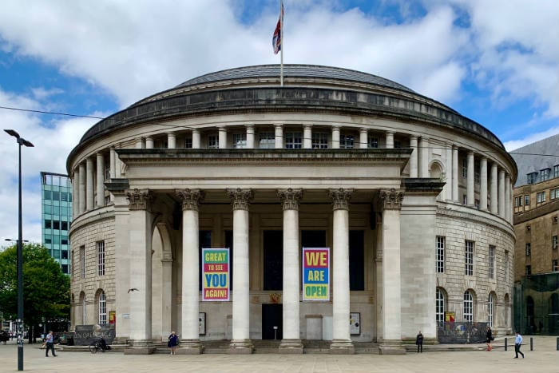

Sport
Manchester has long been synonymous with football thanks to Manchester United
and Manchester City – but there’s much more to discover here.
Many of Europe’s best rugby league sides play close to Manchester, and you can watch national and international cricket at
Lancashire Cricket Club, just outside the city centre.
List of other sports facilities and events to enjoy
- National Cycling Centre at Sportcity - hire a bike and helmet to test the track.
- Also at Sportcity - excellent tennis, squash, and athletics facilities
- Chill Factore - the UK's longest indoor real snow skiing and snowboarding slopes.
- Great Manchester Run - the nation's favourite annual 10k running event
Clothes and Shopping
Manchester is renowned for its shopping facilities, which encompass brilliant British designers,
established worldwide brands and quirky independent one-offs.
Market Street is the very definition of the modern British high street and a good starting point for any shopping trip.
You’ll find premium department stores Harvey Nichols and
Selfridges at nearby Exchange Square, or head to Spinningfields,
Manchester’s most upmarket area for top designer emporia.
The Northern Quarter is the place
for independent shops that you won’t find anywhere else and that embody Manchester’s creative diversity.
For a retail and leisure experience on a grander scale, take a short bus ride out of the city centre for the
Trafford Centre,
the second largest shopping centre in the UK.
Art and Culture
Manchester is blessed with a thriving art and culture scene. It’s a breeding ground for independent spirits
and a beacon for international performances and productions.
Covering everything from modern art to classic masterpieces, from the campaign for social justice to the history of football,
the city has an impressive range of museums and galleries – and many are free, so you can keep going back for more.
If you’re a theatre or opera buff, you can enjoy everything from rousing arias to musicals hot from the West End,
as well as experimental theatre productions that challenge convention and delight the dramatic in you.
Museums
Explore ancient worlds at the Manchester Museum on-campus at the University of Manchester.
See innovation brought to life at the Museum of Science and Industry.
Discover how war shapes people’s lives at the Imperial War Museum North.
Explore the history of democracy and the ‘common man’ at the People's History Museum.
Galleries and Libraries
View important classic and contemporary art at the Manchester Art Gallery.
The Whitworth Art Gallery offers unique interior and outdoor artistic spaces and events.

The John Rylands Research Institute and Library is one of the world's finest collections of rare books and manuscripts,
owned by The University of Manchester.

Beautifully refurbished and restored, this grade II-listed landmark offers 21st century
library facilities in an awe-inspiring neoclassical setting.
*You’ll also find many smaller permanent and pop-up galleries across the city.
Theatres
Theatre, exhibitions, comedy shows and family events galore at The Lowry.
Everything from Shakespearian classics to the latest premieres at the Royal Exchange Theatre.
From musicals to hit plays, this grand old theatre brings it all to Manchester.

Catch the latest shows on tour at this Edwardian venue.
Music and Nightlife
Manchester boasts one of the liveliest music and nightlife scenes in the UK, with live music and club nights taking place across the city every day.
Live Music
Manchester produces and attracts some of the world’s biggest bands and DJs, as well as plenty of up-and-coming talent.
Catch big names on international tours at:
Classical Performances
Manchester is home to the world-famous Hallé
and BBC Philharmonic
orchestras, which both perform at the purpose-built concert venue Bridgewater Hall.
Leading chamber orchestra Manchester Camerata
also performs there, as well as at the Royal Northern College of
Music, which stages a diverse programme of music.
Social Scene
Manchester's thriving nightlife covers a dazzling variety of clubs, bars and other nighttime venues.
The Warehouse Project brings the world’s biggest dance acts to Manchester.
Recent headlining shows include Thom Yorke, Chic, Disclosure,
Rudimental and The Prodigy.
The Printworks is home to some of busiest and most popular venues,
such as Tiger Tiger, Hard Rock Cafe and Bierkeller.
Canal Street is a vibrant LGBT-friendly area,
where all are welcome to enjoy its many restaurants, bars and clubs.
Deansgate and the Locks offer glitz and glamour, while the
Northern Quarter
favours artistic independents.